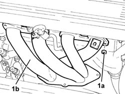

1072C12 EXHAUST MANIFOLD - R R
- Path
- Procedures > 10 ENGINE UNIT > 1072 INLET AND EXHAUST MANIFOLDS > 1072C EXHAUST MANIFOLDS > 1072C12 EXHAUST MANIFOLD - R R
- Kind
- repair procedure (removal / refitting; the operation number is the code)
- Applies to
- engines: 1.8 T.SPARK; all production periods
- Interactive page
- https://sloeber94.github.io/elrnDB-aGt/en/#/125001082
Applies to: engines: 1.8 T.SPARK; all production periods
 Removing
Removing
 Refitting
RefittingPosition the vehicle on the ramp.
Ensure that the ignition key is in the OFF postition, then disconnect the battery negative terminal.
Name | Connector | |
|---|---|---|
- | Battery | See A1B BATTERY ( CONNECTORS ) |
Proceed with the removal
Op. 1072C44 EXHAUST MANIFOLD HEAT SHIELD ON BULKHEAD - R+R
.
Proceed with the removal
Op. 1080B40 CATALYTIC PRE-CONVERTER - R R
.
1. Undo the nuts (1a) and remove the exhaust manifold (1b) releasingi t from the studs on the cylinder head.

Applies to: engines: 1.8 T.SPARK; all production periods
Refitting
RemovingPlace the exhaust manifold back in its housing and fix it tightening the nuts to the recommended torque.
Fastening | Component | Ø | Value (daNm) | |
|---|---|---|---|---|
- | Nut | EXHAUST MANIFOLD/S | M8 | (Cylinder head side) 2.3 ÷ 2.8 |
Proceed with the refitting
Op. 1080B40 CATALYTIC PRE-CONVERTER - R R
.
Proceed with the refitting
Op. 1072C44 EXHAUST MANIFOLD HEAT SHIELD ON BULKHEAD - R+R
.
Connect the battery terminal (-).
Remove the car from the ramp.